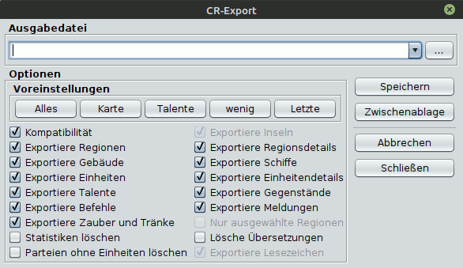

Folgende Möglichkeiten zum Export eines CR stehen zur Verfügung:
| Gebäude | an | aus |
| Gebäude | x | - |
| Lohn | tatsächlicher Betrag | 10 Silber |
| Inseln | an | aus |
| Inselblöcke und Inseltags | x | - |
| Meldungen | an | aus |
| Parteimeldungen | x | - |
| Kämpfe | x | - |
| Kommentare | x | - |
| Effekte | x | - |
| Regionsereignisse (veraltet) | x | - |
| Regionsbotschaften (veraltet) | x | - |
| Einheitenbotschaften (veraltet) | x | - |
| Umgebung (veraltet) | x | - |
| Durchreise (veraltet) | x | - |
| Meldungstypen | x | - |
| Regionsdetails | an | aus |
| Bauern, Pferde, Bäume, Mallorn, Silber, Unterhalt, Rekruten, Lohn, Eisen, Laen, Kräuter, Effekte, Kommentare, Regionsereignisse, Regionsbotschaften, Einheitenbotschaften, Umgebung, Durchreise | x | - |
| Grenzen (Strassen) | x | - |
| Regionen | an | aus |
| offensichtlich, keine Nebeneffekte | ||
| Schiffe | an | aus |
| offensichtlich, keine Nebeneffekte | ||
| Zaubersprüche und Tränke | an | aus |
| ZAUBER und TRANK Blöcke | x | - |
| Die Sprüche, die eine Einheit beherrscht, werden in beiden Fällen exportiert. | ||
| Einheiten | an | aus |
| Parteien und Einheiten | x | - |
| Kompatibilität | an | aus |
| Konfiguration-Tag | Standard | Java-Tools |
| trustlevel-Tag | - | x |
| Kommentare | - | x |
| ejcOrdersConfirmed-Tag | - | x |
| Insel-Tag | - | x |
| Insel-Blöcke | - | x |
| herb-Tag (Regionskräuter) | - | x |
| Hot-Spots | - | x |
Der Schalter Ausgewählte Regionen ist nur aktiv, wenn in der Karte Regionen mit Rechtsklick angewählt wurden. Ist er aktiviert, werden nur die gewählten Regionen exportiert.